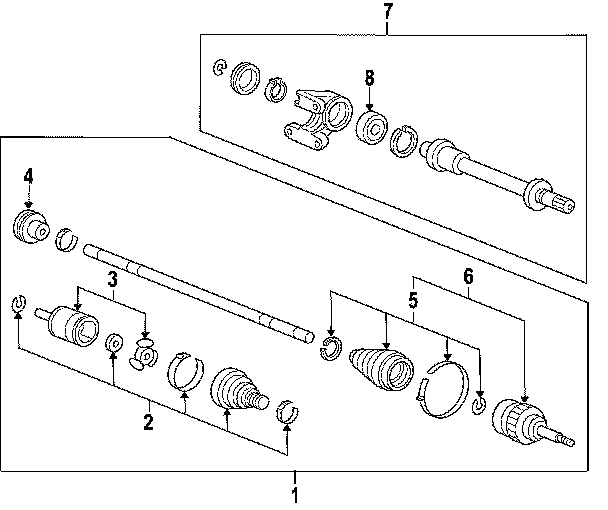

Operation CHARM
: Car repair manuals for everyone.
Home
>>
Honda
>>
2007
>>
Civic Si L4-2.0L
>>
Parts and Labor
>>
Transmission and Drivetrain
>>
Drive Axles, Bearings and Joints
>>
Axle Shaft Assembly
>>
Images
Images
Front Axle:
